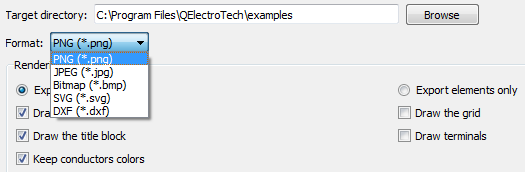

Export schema¶
QElectroTech allows exporting the different folios to many type of formats: PNG, JPEG, Bitmap, SVG and DWX.
- Select File > Export menu item to open the exporting PopUP window.

Figure: QElectroTech File menu
Note
As many other tools, QElectroTech is an applications which allows using keyboard shortcut.
- Press
Ctrl + Shift + Xto open the exporting PopUP window.
For more information about keyboard shortcut, please refers to keyboard shortcut section.
2. Choose the folios you wish to export and specify their size.

Figure: QElectroTech export PopUP window
3. Choose exporting directory and format.
4. Choose rendering options.

Figure: QElectroTech exporting formats combo box
5. Press Export button to create the files.
QElectroTech creates one file for each folio choosed at the directory specified.